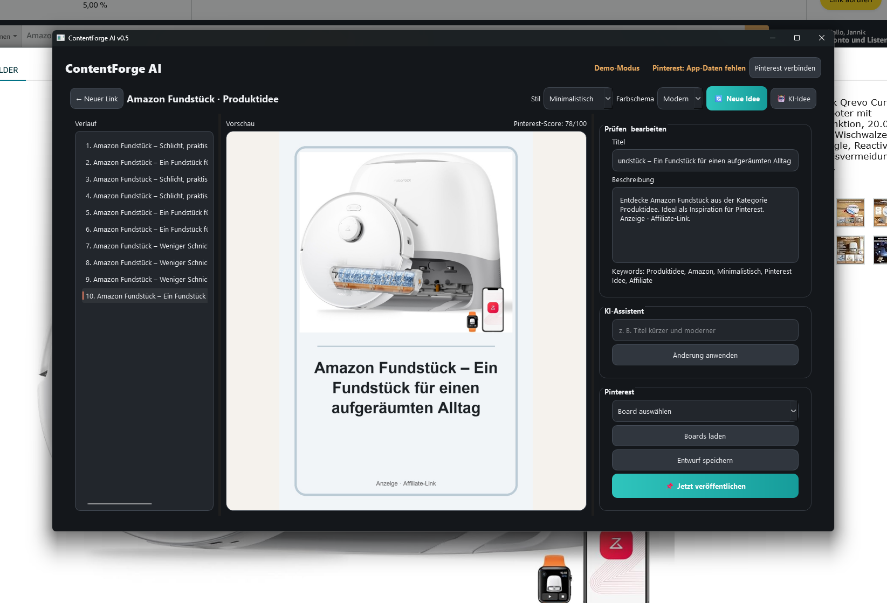

1. Produktbild einfügen
Der Nutzer fügt ein eigenes oder zulässig verwendbares Produktbild per Zwischenablage, Drag & Drop oder Dateiauswahl ein.
ContentForge AI erstellt Pinterest-Pin-Entwürfe aus Produktbildern, die der Nutzer selbst bereitstellt. Jeder Pin wird vor dem Speichern oder Veröffentlichen manuell geprüft.

Der Nutzer fügt ein eigenes oder zulässig verwendbares Produktbild per Zwischenablage, Drag & Drop oder Dateiauswahl ein.
Die App kombiniert Bild, Layout, Farben und einen bearbeitbaren Text zu einem Pinterest-Pin.
Es erfolgt keine automatische Veröffentlichung ohne Bestätigung. Der Nutzer kontrolliert Titel, Beschreibung, Link und Ziel-Board.
ContentForge AI ist als lokale Desktop-Anwendung für den persönlichen Gebrauch konzipiert. Produktbilder und Entwürfe werden lokal verarbeitet und gespeichert.
Für eine optionale Pinterest-Anbindung benötigt die App ausschließlich Zugriff auf die eigenen Boards und Pins des authentifizierten Nutzers. Vorgesehen sind die Bereiche boards:read, pins:read und pins:write.
Die App greift nicht auf Pinterest-Inhalte anderer Nutzer zu und veröffentlicht keine Pins ohne eine ausdrückliche Aktion des Nutzers.